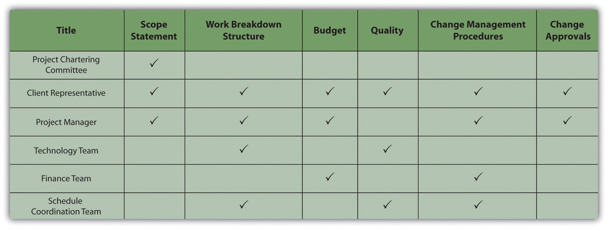

Project management is about managing work processes and leading people. The technical skills of a project manager—the ability to organize the project and develop a scope, budget, and schedule—are critical to executing a project that will finish on time, within budget, and to the project specifications. However, the project will not be a success if the important stakeholders are unhappy with the results.
Project stakeholders often have a significant role in the success of a project. The ability of the project manager to understand the expectations of the various stakeholders and motivate them to contribute to the project success is a major aspect of the project manager’s leadership role. In this chapter, we explore the concepts and skills needed by the project manager to understand and meet the expectations of the one of the most important stakeholders—the client—and the various means and methods for motivating the client to contribute to project success.
One of the definitions of project success focuses on achieving client satisfaction. This definition highlights the importance of the client as critical for both defining and achieving project success. The client is an important project constituent and in most cases the most important constituent. DarnallRussell W. Darnall, The World’s Greatest Project (Newtown Square, PA: Project Management Institute, Inc., 1996), 48–55. described actions for the project manger focused on defining and meeting client expectations. Project success often includes meeting project goals and specifications, and it also includes understanding and meeting the expectations of the client. Depending on the complexity level of the project, the plan to meet the client’s expectations can range from having a general discussion with the project leadership team to developing a formal plan that is tracked during the life of the project.
To appreciate the skill and effort expended by the project team in achieving the objectives of the project, the client needs to know more about what the team does.
Often the client does not have the project management experience of the project manager or project team. An experienced project manager understands the phases of the project and the requirements of the different phases. A less experienced client may become frustrated at the changes in the management approach required for the different phases of the project. For example, during the early phases, the project leadership is encouraging creative approaches to accomplishing the project goals. As the project proceeds and the project plan becomes more firm, the project leadership focuses on accomplishing the project goals. The types of meetings, the agenda of the meetings, and the general project atmosphere change as the project moves from the planning phase to the production mode of the execution phase of the project.
During the last phases on a project, project team members are often tired and beginning to anticipate the transition that will take place at the end of the project. The motivational approach that worked during the early phases of the project is less effective during the final phases, and the project manager applies different approaches to motivating the project team. These changes can be disconcerting on a person’s first project. By explaining what to expect and planning with the client a process to minimize the impact of these changes, the project manager prepares the client for these events and reduces the frustration.
The project client translates the needs of the organization through chartering the project and defining the project scope to the project manager and the project team. The client also has an oversight role. This oversight is often accomplished through regular project reviews and reports from the project team. Depending on the complexity level of the project, the reviews can vary significantly. On less complex projects, the review might be conducted in a one-hour meeting with a one-page summary document serving as the project progress report. On more complex projects, a full-day meeting might be necessary for the project progress to be fully understood, and the project report may be one hundred pages or more.
In addition to providing the formal overview of the project, most clients would like to actively participate in the success of the project. This is a delicate balance. The participation of the client can have undue influence on project decisions. The advantage of including the client in project activities is to gain the client’s personal investment in the project plan, to create a better understanding for the client of the problems the project encounters during the life of the project, and to gain the insights and contributions of the client in problem solving.
Involving the client in teams where the client’s special knowledge can add value to the team discussions and activities contributes both to the success of the team and the satisfaction of the client. During the construction of a chemical plant in Tennessee, the project team struggled with a very tight project schedule. A team was established to explore ways to reduce the approval process for the drawings of the plant design. It was taking two weeks for the design review, and even though this was within the normal time frame for design reviews, the project management team believed there were opportunities to reduce this time and shorten the length of the project.
The client’s engineering manager participated in the brainstorming sessions that explored ways to reduce the design review time. Several good ideas were developed and put into place. The client’s engineering manager took these ideas back to the client’s team and instituted many of the same ideas. The result was a shortened schedule that saved two weeks by the end of the plant design. The other result was a client that contributed to the project success and was emotionally engaged in the positive outcomes.
Client Influence
Consider a project you have been involved in which the client took part in meetings and decision making. If you were to do the project again, describe how you would manage the client’s involvement. Specifically, describe the positive aspects that you would repeat and the negative aspects that you would try to avoid.
Two of the sources of dissatisfaction in personal and business interactions are unmet expectations and a misunderstanding or ignorance of the values held by the other party. The project manager needs to avoid having a dissatisfied client due to a clash of values or a failure to meet expectations.
Client expectations are expressed in chartering documents such as the scope of work, the project purpose statement, and the list of project deliverables. Other expectations exist that are more difficult to express in written documents.
One project client had such a difficult time with the billing processes on her previous project that significant project management time and resources were expended on reconciling billing issues. This client has an expectation in the next project that project accounting and billing processes operate effectively and efficiently. Another client had been constantly surprised by changes and nonplanned events happening on the project. This client wanted to participate early in the discussion of problems that arise during the life of the problem and contribute to finding solutions and minimizing the negative impact on project performance.
Understanding and capturing these expectations in a written document is an important step in effectively meeting client expectations. Often it is the next questionRefers to asking additional questions to reveal hidden expectations. that enables a project manager to discover the less obvious expectations. The next question is the one the project manager asks after the initial response to inquiries about expectations. In our example, the client may express that he or she wants project billings to be accurate and timely. This is an easily understandable expectation, but when the project manager asked the next question—“Can you tell me more about what you mean?”—the client revealed the problems on her previous project, and the project team developed a better understanding of the client’s concern. The project team developed measures for tracking project billings that measured both timeliness and accuracy. This process enabled the project team to understand the client’s concern, develop work processes that demonstrated a response, and provide data to the client on the timeliness and the accuracy of the billing processes.
For the client that expected to hear about problems early and participate in the problem-solving discussions, the project team shared the project action item register and highlighted issues the team felt may be important to the client. The project manger also discussed potential concerns with the client during their weekly project update.
After the project team captures the client expectations, the team then develops a method for tracking performance against expectations. In our example, the project team defined accuracy and timeliness in measurable terms and tracked the team performance. The project team developed a survey to track the client’s perception of inclusion in the problem-solving process and tracked the client’s response. These measures were then presented in the project review meetings with other measures of project performance such as cost and schedule.
As the project team meets and exceeds the client expectations, these expectations tend to change. If the goal is 85 percent accuracy on all project billings, and the project team begins to perform with an average of 95 percent accuracy or higher and never falls below 90 percent, then the client begins to expect 95 percent accuracy. This is a realistic expectation of the client; it also changes the expectation so that meeting the client’s expectation becomes harder. Even if expectations change, it is important to maintain the original goal. This reminds the client at the end of the project that the project team not only met expectations but also raised them during the life of the project.
Values are desirable principles or qualities.Merriam-Webster Unabridged Online Dictionary, s.v. “values,” http://unabridged.merriam-webster.com/cgi-bin/collegiate (accessed June 18, 2009). Disagreements based on differences in values are extremely difficult to resolve because compromising means compromising your values. Organizations often have developed a list of corporate values. Sometimes these are real and sometimes they are more important to the corporate brand. The project manager needs to understand the real organizational and personal values related to the project.
On construction projects, safety is an important consideration in the planning and execution of a project. Every construction company will assert a strong safety value. The value is tested when safety rules are developed. Is the organization willing to terminate or sanction an employee for a major safety violation? This is not a yes or no question but the beginning of a dialogue. Everyone on the project needs to understand safety rules, and consistent application of the approach to safety is critical to establishing a safety culture on the project. Agreeing on a safety program based on a value for safety at the beginning of a project will prevent serious confrontations later.
A large project in Washington had a client that valued communications. All the members of the client’s team had the newest phone technology and took calls during project meetings. The project team saw this behavior as rude and interfering with the effectiveness of the project. The client was very comfortable in this chaotic environment and saw constant communication as a value that helped the organization identify and respond to opportunities. This provided the organization with a competitive advantage in their marketplace. The same behavior was preventing the project team from developing a common understanding and agreeing on a project plan because they could not focus on the needs of the project long enough to develop this common understanding. The project manager and the lead client recognized the potential conflict for the project and developed a list of project meetings that would be “cell-less,” which meant that the team members would turn cell phones off for that meeting. Other meetings would follow the cultural standards of the client.
Developing a mutual understanding of the personal and organizational values and dealing with differences during the early phases of the project will significantly reduce the potential for insolvable conflicts. This becomes more important on a large, complex project where the likelihood of a diverse project team is high, and the team may have to deal with different laws, customs, and cultural values. Developing an understanding of these differences and developing an appreciation for the value of this diversity for project team members can prevent conflict later in the project.
During the life of the project, the project manager will often have the opportunity to take advantage of the client, either because a clause in the contract is not written accurately or because the project manager has access to more detailed information. For example, a client finds a mistake in the original documents provided to the project team. The project team analyzes the new information to access the potential impact on the project cost and schedule. A skilled project manager can demonstrate a negative impact and increase project profits by requesting a change order. A skilled project manager can also usually find an innovative approach to finding a solution without increasing the cost or schedule. In most cases, the client wants to be treated fairly. FairnessImpartial and honest treatment that is free from self-interest, prejudice, or favoritism. is characterized by impartiality and honesty that is free from self-interest, prejudice, or favoritism.Merriam-Webster Unabridged Online Dictionary, s.v. “fairness,” http://unabridged.merriam-webster.com/cgi-bin/collegiate?va=fairness&x=0&y=0 (accessed June 18, 2009). If the client interprets the change order as fair, then the project manager has the opportunity to create a satisfied client. If the client believes the behavior of the project manager is unfair, then it is difficult to create a satisfied client.
Organizational Values
Choose an organization with which you are familiar that proclaims to support a particular set of values. Describe actions that it has taken that either support or differ from its stated values.
Projects always experience unexpected problems that produce stress. Dealing with problems with competence is vital to maintaining a good relationship with clients.
There are competing interests on projects, and the larger and more complex the project, the greater the number of issues and concerns that need to be addressed.
It’s 7:30 in the morning and the client called and wants you to have coffee in an hour with the new CEO, who flew in last night, to give him an update on the project. The concrete trucks were supposed to be on site at 7:00, but they have not arrived. A storm is predicted for tomorrow, and the concrete has to be in and covered before the storm hits. A news reporter called and said she has an unnamed source who claims that there is contamination of a nearby river coming from the project site.
The project manager decided to postpone a team meeting about project scheduling and cancelled lunch plans with his wife. It was going to be a busy day.
On large, complex projects, hundreds of decisions are made every day. Most of the decisions focus on the day-to-day operation of the project. Early in the project, decisions focus on choosing between alternative options for accomplishing project goals and determining how the project will be executed. Later, the focus is typically on solving problems. The project team develops solutions to deal with the barriers that emerge and develops alternative plans to meet project goals. The authority to make decisions is typically established early in the project and identified in a responsibility matrixTable of people and types of problems that might require decisions.—a table of people and types of problems that might require decisions—as shown in Figure 4.5 "The Responsibility Matrix".
Figure 4.5 The Responsibility Matrix
The responsibility matrix identifies roles and client involvement.
Decisions that influence the outcome of the project, such as a delay to the project completion date or an increase in the project costs, typically involve the client. Some clients prefer to make the final decision, with the project manager developing alternative solutions with a cost-benefit analysis of each of the alternatives. Others prefer to be involved in discussions to better understand the barriers, developing alternative solutions and making decisions in a team environment. Understanding the client’s decision-making preference and developing procedures and processes that support that preference is important to meeting client expectations.
Develop processes and methods that encourage both client and team members to identify issues and concerns early. Develop processes for dealing with these issues and concerns effectively. Define how and when decisions are made.
On projects with a low complexity level, the project manager and team leaders can make decisions informally, with short meetings or phone calls. Weekly or monthly staff meetings are appropriate for more complex decisions. Even though the decision-making process may be simpler on less complex projects, it is still important to understand the client’s expectation for inclusion in the decision-making process and recording decisions and changes in project plans.
On more complex projects, the use of action item registers, weekly staff meetings, responsibility matrices, and other tools foster the decision making on a timely basis. For project teams operating in diverse locations, Internet-based tools for recording and tracking action items can provide a location for capturing issues and concerns.
Project managers typically have a high degree of confidence in their ability to deal with issues and concerns as they arise. The delivery of some equipment is delayed a week, causing changes in the project schedule, or the beta test of a software program identified far more problems than expected. The project manager knows the problems, the team developed a solution, and the project has a plan for recovering. The project will be back on track soon. Should the project manager inform the client? The answer seems like an easy yes, yet many project managers often believe there is no reason to bother the client with a problem they have under control.
Then the second delay occurs on the equipment delivery or the fixes for the beta test are more costly than expected. Now the problems have elevated to the point the clients should be informed. The greater the distance between the time of the event and the time the client knows about the events, the greater the client’s frustration and mistrust. Including the client in the processes for analyzing project issues or concerns as well as the recovery planning enables the client to develop confidence that problems are being addressed. Including the client early in the process for dealing with problems enables the client to contribute with solutions and builds confidence that he or she is aware of critical issues on the project.
On a large, complex project in South America, the project team was reestimating the project cost and schedule projections after the project design was complete. The team was also conducting a new risk analysis, and the results of the cost and schedule projections, together with the risk analysis, provided the client with better cash flow projections. Early in the process, the project team understood that the cost projections would significantly increase, and the final project cost would be significantly above the contingency set aside for the project.
The client looked for an early indication of the results of the analysis, and the project manager kept reporting it was too early to know. The project team debated how much contingency the project needed and how to inform the client. When the client was told the results of the cost projections, the response was a combination of frustration and anger. The project manager was removed from the project and a new project manager assigned.
The project manager should have dealt with the increased cost of the project early on. When first indications suggested that estimates were low and several items in the budget needed extra funds, the project manager should have had conversations with the client. Including one or more members of the client’s team in the reevaluation effort would have kept the client informed of the progress regularly and built trust in the new numbers. The project team could have offered suggestions and contributed to possible solutions for addressing the concerns that were developing, as costs were higher than expected. Dealing openly and early with the client is critical to client satisfaction.
The project environment moves fast, and decisions are made and implemented to keep pace. Decisions made in the conceptual phase of the project seem less effective during the design phase. It is not that the decision was necessarily wrong; based on the data at the time, most decisions are understandable. With new information, it is sometimes important to revisit and change decisions made earlier in the project. As obvious as this sounds, many project teams are reluctant to challenge earlier decisions. Without a mechanism in place to revisit decisions, decisions may be seen as final. This sense of finality may slow down the decision-making process to make sure every decision is right. Delays in decisions can put activities behind schedule and affect the project completing on time.
Mechanisms for revisiting decisions are similar to project change orders. Similar to a change order, a request to revisit a decision must be initiated by someone on the team. The formality of methods used by the project to revisit a decision depends on the complexity profile of the project. On less complex projects, an informal discussion in project meetings can develop the awareness that a decision needs to be revisited. On more complex projects, the action item register and the weekly project meetings provide a venue for revisiting decisions.
Sometimes people asked that decisions be revisited because they did not like the decision that was made.
On an engineering project, the electrical design schedule was changed to support the completion of the activities on the critical path by a project milestone date. The change increased the number of hours needed to complete the work because of the change in work processes. The project manager accepted the costs of the change to achieve the milestone date, but the manager of the electrical engineering team objected because the change would cause their part of the job to exceed the budgeted amount. The project manager decided not to revisit the decision because no new information was available that would cause the decision to change.
Clients are often involved in major decisions on the project. For example, if the project invested another million dollars, the project could be completed a month early. The client will conduct the cost-benefit analysis and decide if the extra expense is worth the gain in time. Once this decision is made, the necessary changes are made in the execution plan and new goals are established through the change management process. Later, for reasons outside the control of the project, the project will not experience the time savings from the additional investment of funds. It is important to revisit the decision. A culture that encourages project team members to bring up the need for revisiting decisions and a mechanism that makes it easy to surface issues and concerns will increase the likelihood that these issues will come to the attention of the management team.
On a major pharmaceutical project in Ireland, a United States–based company was building a new plant to produce a new drug, and the priority was completing the plant to get the drug to the marketplace. The client was involved in the process to select major equipment, and after an expedited bidding process, an equipment vendor was selected for a critical piece of the plant equipment. Later, members of the project team learned that this vendor was overcommitted, and there was a high risk that the vendor would not be able to meet the schedule dates. Because it was the client’s decision, the project leadership was not warned of the possible risk. Weeks later, the vendor began missing critical dates, and the leadership became aware of the risks.
The client was furious that the decision was not revisited earlier in the project. Even though changes were made that brought the project back on track, the client did not trust the project team again. The project finished on time and within budget while meeting all quality specifications, but the client was not pleased.
Establishing a culture and a mechanism for revisiting project decisions is important for meeting client expectations.
An experienced project manager came up with a clever idea to enable his clients to capture the attention of the project team. He gave the client’s team a bright red index card and said, “This is your emergency button.” The card was a symbol. It empowered the client with the ability to capture the complete attention of the project team. When the client presented the red button, the project manager instantly stopped current activities and focused on the client. The red button meant the project leadership focused on understanding the issue or concern presented by the client and developing project priorities to meet the client’s concerns.
Although the red button was rarely used, it gave a sense of power to the client and communicated that the client was important. One project manager used the “red button” on four projects, and on two of the projects the card was never used. On one project, the client used the card to get the project ready for a visit from the client’s boss, and on the fourth project, the client used the card often. Although the project manager believed the card was overused to get the total attention of the project leadership team, he never regretted providing the client with the card. The “red button” card provided them a method to distinguish the really important needs of the client.
Threshold for Client Involvement
Consider a project with which you are familiar where the client was not included in making day-to-day decisions. Describe a type of problem that would be too small to take to the client for input and another problem that would be just large enough to require client involvement. If you were trying to communicate the reasons for your decision to another team member, describe the threshold that had to be crossed for the second problem to qualify for client involvement.
Project milestones represent significant events on the project. Some project milestones signify external events that provide critical information or resources to the project or an external event that requires information or deliverables from the project.
The client’s board of directors meets on March 15, and the client must report the project progress and submit the project final budget for approval. The project team develops the information needed for the project progress report and finalizes the project estimate by March 10 to provide the client with five days to review the information and make any changes.
Recall that a milestone is an event that consumes no time or resources. In this example, the Provide Client with Report is the milestone event. All the activity to develop and deliver the report takes place before the milestone event.
On March 8, the project team determines that the progress report and estimate cannot be completed by March 10. The team will need one more day to complete the report and estimate. Should the project manager ask the client for a one-day extension? The client may be able to review and revise the information before it goes to the board in four days, but the message to the client has a bigger impact on the project. By missing the deadline, the client can develop the perception that client deadlines are less important, that the project team is unable to complete critical tasks on time, or that the project team is not dedicated.
Instead of asking the client for one more day, the project manager pulls together the project team and asks what it will take to make the milestone date. If the estimator works overtime tonight and the project controls team starts a few hour early on March 9, then the project controls team can work late on March 9 to finish the report. The project administrative staff can come in early on March 10 to do the revisions and make copies, and the reports can be ready by noon. Other activities will have to be delayed and critical staff will work overtime, but the client will get the needed information by the promised date.
Making the extra effort to deliver by the milestone date communicates to the client and the project team the importance of meeting milestones. The client develops confidence that the project team is dedicated to meeting client expectations and that deadlines are important. The extra efforts by the team to meet the client’s critical dates will often result in the client making an extra effort to help the project team meet critical dates.
During the life of a project, the project team encounters a large number of small problems that can cause small delays. A thunderstorm caused the loss of electricity in the office building, and the bidders’ conference had to be delayed one day; a computer virus shut down the use of computers, causing the loss of another day; and the airplane flights were late, so the project reviews were one day late. None of these events caused significant problems for the project, but together they add up to delays that could affect the end date of the project.
If these delays continue to add up, then the project end date will begin to slip. As the project nears the completion date, the team will work overtime, decisions will be rushed, and resources will be added to the project to avoid missing the project end date. This type of end-of-project atmosphere will leave a strong lasting impression with the client and usually does not produce a satisfied client.
Project milestones provide the opportunity for the project manager to spread the end-of-project pressure over the life of the project. Project managers add resources, authorize overtime, and expedite work to accomplish what is required to meet the milestone. The project work increases in intensity, motivating project team members to accomplish the work on time until the milestone is achieved. After the milestone is achieved, the project celebrates and acknowledges the success of the team and then begins working toward the next milestone. Project managers use milestones to increase this intensity and focus to keep the project on schedule and prevent the delays of hard decisions to the end of the project.
This approach allows the project manager to lower the intensity of the project after a milestone is accomplished. After celebrating the successful completion of the milestone, a project manager will often review the future plans and allow the team to reflect on finding new ways of approaching the project work. Adjustments are made to the project work plan and the milestone cycle begins again.
Milestones are rarely evenly distributed over the length of the project. Project managers often select key events and make them milestone events to create roughly equal spacing between milestone dates. On large, multiyear projects, managing to a milestone each quarter provides good timing for the project. On shorter projects, monthly milestones can provide the right timing. On larger, more complex projects, typically a large number of activities can be designated as milestones for the project. On smaller projects, the project manger may need to artificially create milestones.
Project celebrations are a time when the project manager and the management team can thank the project team members for their contribution to the project’s success at various stages of the project. Celebrations for successfully accomplishing project milestones are good examples of creating the opportunity to honestly celebrate. Some projects have birthday celebrations for the team or holiday celebrations, and although these events can be a positive contribution to the project morale, they are not connected to the success of the team in accomplishing project objectives.
Successful celebrations reinforce the effort and activities that created the success. Successful celebrations communicate appreciation for the energy and commitment of the team, focused on team goals. Successful celebrations communicate progress and confidence to project stakeholders, and successful celebrations share the success of the project with the client and reinforce the meeting of client expectations.
Successful celebrations result from good planning and the application of some basic principles for celebrations. The following are some of the basic principles for developing a successful celebration:
When clients speak at a celebration, their remarks usually provide high praise for the work of the project team. This event provides an opportunity for the client to reflect and appraise the progress of the project team. Often the client concludes that the team is meeting or exceeding expectations. The celebration reinforces that conclusion.
If the client has doubts about some of the project performance but still speaks at the celebration and praises the team, the client may experience cognitive dissonance. The client will typically reevaluate the perception of the project team’s performance and conclude the team really has done a good job. The perception is now consistent with the client’s remarks and the end result is a client perception of a project as meeting expectations.
Understanding and meeting client expectations is a proactive process. The project manager and the project team develop plans and processes that focus on defining both specifications and expectations that are often difficult to quantify. The team executes the project in a way that meets both the specifications of the client and also the more subtle expectations not reflected in the measured data.
Milestone Celebrations
Consider a workplace with which you are familiar. If it utilizes milestone celebrations to mark completion of special tasks or phases of work, compare the components of the celebration with those recommended in the text. If it does not, describe how you would use milestone celebrations in this workplace.
Exercises at the end of the chapter are designed to strengthen your understanding and retention of the information recently acquired in the chapter.
Write several paragraphs to provide more in-depth analysis and consideration when answering the following questions.
The exercises in this section are designed to promote exchange of information among students in the classroom or in an online discussion. The exercises are more open ended, which means that what you find might be completely different from what your classmates find, and you can all benefit by sharing what you have learned.
Managing relationships with clients is a challenging task, and it is often discussed online. In this exercise, you locate online articles and other publications dealing with client relationships and then compare and analyze them.
Review your work and use the following rubric to determine its adequacy:
| Element | Best | Adequate | Poor |
|---|---|---|---|
| File name | Ch04ClientStudentName.doc | Word 2010 version using .docx | Another file name |
| Locate and analyze information online related to managing client relationships | Summary of the five points; web address; screen capture; comparison of each point | Same as Best | Summary not accurate; missing web address or screen; all five topics not addressed |
Morale and psyche are an important component in any project; this includes both the team and the client. Project milestones represent significant events within the project. Some project milestones signify external events that provide critical information or resources to the project or an external event that requires information or deliverables from the project. Nonetheless, the proper creation and distribution of this information can be an integral part of the overall success of your project.
Start a web browser program and go to the Orion Crew Exploration Vehicle Project Milestones page for NASA at http://www.nasa.gov/pdf/479023main_Orion_2010_Milestones.pdf. A screen capture of this milestone analysis is shown in Figure 4.9 "Orion Milestone—NASA".
Review your work and use the following rubric to determine its adequacy:
| Element | Best | Adequate | Poor |
|---|---|---|---|
| File name | Ch04MilestonesStudentName.doc | Ch04MilestonesStudentName | Another file name |
| Locate, download, and analyze a project milestone analysis and then create your hypothetical project milestone analysis for your team and client | Milestone and name/date on first line; screen captures that show the web link in the Milestone folder of your browser’s favorites and an image of the initial screen capture of the NASA milestone analysis; your perceived, most important aspect and rebuttal (250 words); a hypothetical 1,000-word milestone analysis that is entirely consistent | Milestone and name on first line; screen captures that show the web link in the Milestone folder of your browser’s favorites and an image of the NASA milestone analysis; a brief rebuttal (150 words or less) as to why you think this is the most important aspect of the milestone; a hypothetical 500-word milestone analysis that is somewhat consistent | Missing or incomplete screen captures; a rebuttal that is too general and lacks significant educational correlation from the text; a hypothetical milestone analysis that is not consistent and lacks evidence of thought provocation |